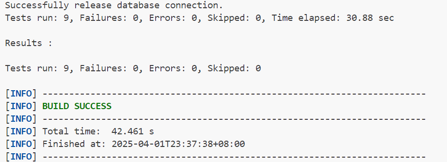
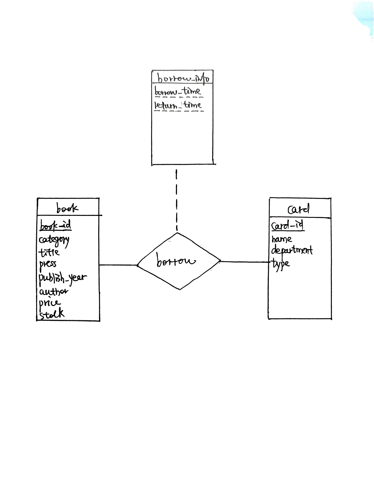

Lab5
Lab5: 图书管理系统
杨亿酬 3230105697
2025-3-30 ~ 2025-4-1
1. 实验目的 ¶
- 设计并实现一个精简的图书管理程序，要求具有图书入库、查询、借书、还书、借书证管理等功能。
2. 实验需求 ¶
- 提供一个基于 MySQL( 或 OpenGauss, SQL Server) 的精简图书管理程序，该图书管理程序应具备较好的可扩展性、鲁棒性和安全性，并且在高并发场景下仍能正确运行。
- 完成类 LibraryManagementSystemImpl 中各功能模块的函数，并通过所有测试样例。
3. 实验环境 ¶
- mysql Ver 9.3.0 for Linux on x86_64 (MySQL Community Server - GPL)
- openjdk version "21.0.6" 2025-01-21 OpenJDK Runtime Environment (build 21.0.6+7-Ubuntu-124.04.1) OpenJDK 64-Bit Server VM (build 21.0.6+7-Ubuntu-124.04.1, mixed mode, sharing)
- Apache Maven 3.8.7
- VSCODE Ubuntu 24.04.2 LTS
Start MySQL by
sudo service mysql startthenmysql -u root -pmvn -Dtest=LibraryTest clean testunder/librarymanagementsystem/
4. 系统各模块的设计思路和实现 ¶
jdbc 基本编写 ¶
每个事务处理函数大致包括以下部分
- 建立连接Connection conn = connector.getConn();
- 检查输入合法性(视具体函数检查内容不同)
- 执行操作
- 获取结果更新
- 提交事务
检查输入 , 执行操作 , 获取结果更新使用 sql 语句 , 通过 PreparedStatement 防止 sql 注入 , 且有利于批量操作
如存在输入不合法等异常应抛出,rollback整条事务并输出提示
storeBook¶
| Text Only | |
|---|---|
1 2 3 4 5 | |
2.设置检查书目是否存在的PreparedStatement语句,
String check = "select book_id from book where category = ? and press = ? and author = ? and title = ? and publish_year = ?";(book类的unique要求:unique (category, press, author, title, publish_year))checkstmt = conn.prepareStatement(check);将string转化为sql语句通过
checkstmt.set<TypeName>(<Index>,<Content>);设置查询变量res = checkstmt.executeQuery();执行查询操作并获取返回结果| Java | |
|---|---|
1 2 3 | |
3.执行insert操作
同样先设置PreparedStatement语句,
String insert = "insert into book(category, title, press, publish_year, author, price, stock) values(?, ?, ?, ?, ?, ?, ?)";,转化为sql语句,设置变量并执行,获取结果4.book表要求每个实体有自增的primary key
book_id,因此需要在执行查询时设置获取返回的自增key,insertstmt = conn.prepareStatement(insert, Statement.RETURN_GENERATED_KEYS);根据获取结果更新book_id,通过
getGeneratedKeys()函数为插入的book设置book_id,如果没有获取到book_id抛出异常并rollback| Java | |
|---|---|
1 2 3 4 5 6 7 8 9 | |
commit(conn);提交事务
incBookStock¶
| Text Only | |
|---|---|
1 2 3 4 | |
update book set stock = stock + ? where book_id = ?stock非负检查
select stock from book where book_id = ?异常处理:
(1)bookId不存在
if (rowsAffected == 0) throw new SQLException("Book not found.");(2)stock为负
if (stock < 0) throw new SQLException("Stock cannot be negative.");
storeBook(List)¶
| Text Only | |
|---|---|
1 2 3 4 5 6 7 8 9 10 | |
select book_id from book where category = ? and press = ? and author = ? and title = ? and publish_year = ?insert操作实现
insert into book(category, title, press, publish_year, author, price, stock) values (?, ?, ?, ?, ?, ?, ?);Batch的使用:逐本检查加入Batch,全部完成后批量执行| Java | |
|---|---|
1 2 3 4 5 6 | |
| Java | |
|---|---|
1 2 3 4 5 6 7 8 9 10 11 | |
removeBook¶
| Text Only | |
|---|---|
1 2 | |
select book_id from book where book_id = ?处于被借状态检查,return_time == 0表示未被归还
| Java | |
|---|---|
1 2 3 4 5 6 | |
delete from book where book_id = ?
modifyBookInfo¶
| Text Only | |
|---|---|
1 2 | |
book状态更新
update book set category = ?, title = ?, press = ?, publish_year = ?, author = ?, price = ? where book_id = ?Note:根据测试用例，只需要不修改book_id与stock即可，不需要在book_id和stock不同时直接抛出异常
querybook¶
| Text Only | |
|---|---|
1 2 3 4 5 6 7 8 9 | |
select * from book where 1=1 and ...使用
1=1配合and有效连接，通过conditions.get...()获取查询要求，最后利用order by与sort order调整结果顺序(默认顺序book_id ASC，多个顺序可以按序并存)，同样使用preparestatement避免sql注入添加变量
if (conditions.get...() != null) stmt.set<Type>(index++, conditions.get...());查询结果构造与输出
| Java | |
|---|---|
1 2 3 4 5 6 7 8 9 10 11 12 13 14 15 16 17 | |
borrowBook¶
| Text Only | |
|---|---|
1 2 | |
select stock from book where book_id = ? FOR UPDATEcard_id存在性检查
select card_id from card where card_id = ?已借未还检查
select * from borrow where card_id = ? and book_id = ? and return_time = 0 FOR UPDATENOTE:确保一本书可被同一人重复借阅，只要上次借阅已经归还
借书记录插入操作
insert into borrow(card_id, book_id, borrow_time, return_time) values (?, ?, ?, 0)(使用borrow_time,return_time而非borrowTime,returnTime)借书完成，藏书量stock - 1
update book set stock = stock - 1 where book_id = ?
returnBook¶
| Text Only | |
|---|---|
1 | |
select * from borrow where card_id = ? and book_id = ? and borrow_time = ?NOTE:必须检查borrow_time，避免归还已经归还的书(borrow_time == 0)
更新return_time
update borrow set return_time = ? where card_id = ? and book_id = ? and borrow_time = ?NOTE:必须检查borrow_time,修改对应borrow_time的return_time，避免错误修改同一人此前相同的书籍借用记录
还书完成，藏书量stock + 1，类似borrowBook
showBorrowHistory¶
| Text Only | |
|---|---|
1 2 3 4 5 | |
select * from borrow join book on borrow.book_id = book.book_id where card_id = ? order by borrow_time DESC, book.book_id ASC join连接两表，card_id作为查询参数查询结果构造与输出（类似querybook）
return new ApiResult(true, "Got borrow history",new BorrowHistories(historyItems));
registerCard¶
| Text Only | |
|---|---|
1 2 3 4 5 | |
select card_id from card where department = ? and type = ? and name = ?执行插入操作
insert into card(department, type, name) values (?, ?, ?)设置自增的card_id
card.setCardId(generatedKeys.getInt(1))
removeCard¶
| Text Only | |
|---|---|
1 2 3 4 | |
未归还书籍检查
select * from borrow where card_id = ? and return_time = 0删除操作执行
delete from card where card_id = ?
showCards¶
| Text Only | |
|---|---|
1 2 3 4 | |
select * from card order by card_id查询结果构造与输出（类似querybook）
return new ApiResult(true, "Got cards record.",new CardList(cards));返回CardList的实例
parallelBorrowBookTest¶
要求：多线程同时借书，应有且仅有一个线程借书成功
| Java | |
|---|---|
1 2 3 4 | |
setTransanctionIsolation()设置事务隔离，setAutoCommit(false);关闭自动提交，FOR UPDATE语句实现行级锁定，阻止其他事务修改行
5. 系统验证测试 ¶
通过全部 9 个测试输出 SUCCESS

6. 遇到的问题及解决方法 ¶
1. 使用自增的 book_id,card_id 更新表项
2.batch语句的使用，应addBatch()逐一插入再一次性操作
3.修改书本信息时stock，book_id不正确时是否应该抛出异常
4.querybook过程中多个排序顺序的问题
5.borrowTime,returnTime,borrow_time,return_time的区分问题
6.同一人对同一本书重复借阅的问题（归还后再借，未归还再借）
7.并发借书的事务隔离与锁定
7. 思考题 ¶
1. 绘制该图书管理系统的 E-R 图。¶

2. 描述 SQL 注入攻击的原理 ( 并简要举例 )。在图书管理系统中，哪些模块可能会遭受 SQL 注入攻击？如何解决？¶
原理：通过在应用程序的输入字段中插入恶意的 SQL 代码，从而欺骗数据库服务器执行非预期的 SQL 命令。
例：某数据库后端登录系统如下
| SQL | |
|---|---|
1 | |
| SQL | |
|---|---|
1 | |
--为sql语句的注释，则原登录系统语句如下| SQL | |
|---|---|
1 | |
图书管理系统中易受sql注入攻击的模块：
登录模块（如上）
批量存书：假设数据库批量存书系统后端如下
| SQL | |
|---|---|
1 2 3 4 | |
| SQL | |
|---|---|
1 2 | |
查询：假设数据库批量查询系统后端如下
| SQL | |
|---|---|
1 | |
| SQL | |
|---|---|
1 2 | |
解决方案： 1.使用参数化查询(PreparedStatement):严格控制用户输入的类型
| SQL | |
|---|---|
1 2 3 | |
3.最小权限：严格控制用户权限，给予用户最小的登录权限
4.使用防火墙，ORM框架等实现防注入
3. 在 InnoDB 的默认隔离级别 (RR, Repeated Read) 下，当出现并发访问时，如何保证借书结果的正确性？下面是一个在该场景下可能会出现非预期结果的例子：¶
a. A 启动事务，通过 JDBC 查询到余量 1，代码逻辑判定借书成功，修改库存； b. B 启动事务，在 A 尚未提交事务时，通过 JDBC 同样查询到余量为 1，此时代码逻辑同样判定借书成功，修改库存； c. A、B 分别提交事务，最后结果显示余量为 -1，不符合预期。 【提示】 ● 了解InnoDB默认隔离级别(RR, Repeated Read)实现的原理，以及快照读和当前读的区别，能够帮助你解决这个问题。 ● 在实际应用（例如电商系统）中，“秒杀”、“团购”是频繁出现的一些活动。“秒杀”活动通常伴随着高并发、访问量激增等特点。当并发请求数过多时，“秒杀”系统又是如何防止库存超卖的呢？可以作为课外拓展去了解一下。 ● 测试用例LibraryTest::parallelBorrowBookTest()将会测试在该场景下你的程序是否能够执行得到预期的结果。
[Answer]
InnoDB 默认隔离级别 (RR, Repeated Read) 实现原理
InnoDB通过多版本并发控制(MVCC)和间隙锁(Gap Lock)的组合来实现RR隔离级别
- 事务首次读取时创建ReadView，这个ReadView会在整个事务期间持续使用
- 通过比较数据行的DB_TRX_ID(最近修改该行的事务ID)与ReadView来判断可见性：
trx_id:生成ReadView时活跃的事务ID列表
如果DB_TRX_ID < min_trx_id：可见（事务已提交）
如果DB_TRX_ID >= max_trx_id：不可见（事务在ReadView创建后开始）
如果min_trx_id <= DB_TRX_ID < max_trx_id：
在m_ids中：不可见（事务未提交）
不在m_ids中：可见（事务已提交）
- 通过undo log链访问历史版本数据
间隙锁:锁定索引记录之间的间隙防止幻读
快照读与当前读
- 快照读：事务首次读操作会建立快照(ReadView)，后续读操作都基于这个快照，保证可重复读（通过ReadView和undo log实现，高并发，无阻塞）
- 当前读：读取记录的最新提交版本（需要加锁，可能因为等待导致阻塞）
" 秒杀 " 系统
- Redis 预减库存 + 异步队列
秒杀前将库存加载到 Redis。
用户请求时，先通过 Redis 的原子操作（如 DECR）预减库存。
成功预减后，将订单请求发送至 Kafka/RabbitMQ 异步处理
- 分布式锁：确保分布式环境下同一时间只有一个请求能扣减库存
- 秒杀令牌机制：控制参与秒杀的用户数
秒杀开始前，生成固定数量的令牌存入 Redis。
用户需先获取令牌才能下单，无令牌则直接拒绝
- ...
parallelBorrowBook并发访问的正确性保证
setTransanctionIsolation()设置事务隔离，setAutoCommit(false);关闭自动提交，FOR UPDATE语句实现行级锁定，阻止其他事务修改行